Load tests are a critical tool for any company that wants to build and maintain robust,
scalable websites and web apps. They simulate traffic hitting your servers,
allowing you to measure exactly how your app performs under different load profiles.
The overall concept of load testing was born in the physical world.
For example, structural engineers load test bridges before opening them to the public and power engineers load test electrical distribution systems.
But in the world of software, load testing is the process of directing simulated traffic at any application that handles requests,
be that a website, web app, API endpoint, even load balancers and caches, then measuring that software’s performance under the load.
1.1 Who’s interested in load test results?
Load test results are valuable to both business stakeholders and engineering teams.
On the business side, when an app can’t cope with its current amount of traffic, the app’s performance degrades or the app may stop working entirely.
This results in an immediate drop in the company’s revenue.
From the engineering team’s perspective, load testing provides valuable feedback about your production system - how many concurrent users can it handle?
How does response time change as load increases? Is there an uptick in failed requests under heavier load?
It’s this engineering perspective that we’ll focus on in this case study of Monsoon.
1.2 What is Monsoon?
Monsoon is an open-source, serverless framework for running browser-based load tests in the cloud.
[TO INSERT: picture of Monsoon CLI and Weather Channel]
[CAPTION: Fig 1.1: ]
Monsoon allows software engineers to easily load test their single-page application in anticipation of traffic spikes or overall business growth.
Monsoon can simulate loads of up to 20,000 concurrent users, and tests can be of any duration, from minutes to weeks or longer.
Engineers can also see their load test results visualized in a near real time dashboard.
1.3 Brain Boost, a Hypothetical User Story
To see load testing in action, let’s spend some time with the engineering team at Boost Health.
Boost is a rapidly-growing startup in the health and wellness space.
The stakes are high. Boost’s marketing team has spent months planning the product launch for its new Brain Boost supplement.
It’s Boost’s biggest product launch ever, and business executives want to close new rounds of venture capital funding based on the success of Brain Boost.
Fig 1.2: Going all in on Brain Boost.
Boost expects more traffic than their site has ever seen on launch day.
They’re predicting peaks of 4,000 concurrent users.
The engineers at Boost are tasked with making sure the site can withstand all that traffic, so they decide to run load tests.
But before we discuss these load tests, it’s important to note that the Boost website is a single page application.
This has important implications for load testing.
1.4 What is a Single Page Application?
A single page application is a web app comprised of just a single HTML page. Unlike a traditional website, after the initial page load, there are no page reloads.
The content of the single page is just repeatedly updated on the fly using browser-side JavaScript.
SPAs have some significant advantages over more traditional websites:
They reduce strain on server resources.
They speed up development by decoupling the frontend code from the backend code.
They provide a much more dynamic, responsive experience for the end user since there are no full page reloads.
1.5 Boost Health and Their Load Testing Journey
So let’s follow along with the Boost engineers as they load test their SPA.
First Attempt - Protocol-based load testing with JMeter
One of the Boost engineers used a well-established, open-source load testing tool called Apache JMeter at a previous job,
so this is the first option the team tries.
JMeter is categorized as a protocol-based load testing tool. Protocol-based load tests are the original type of load test.
They involve traffic simulation at the HTTP protocol layer.
For example, if loading a webpage triggers HTTP requests for 75 subresources, with protocol-based testing, the developers will need to write code to request the original page AND all 75 of those subresources.
This is clearly a great deal of work for the team. On top of this, JMeter is a complex tool and the learning curve is steep.
The team settles in for many painful days of work ahead.
Fig 1.3: Protocol-based load testing can be painful.
After the team gets their first JMeter load test working, their results seem strangely incomplete. It turns out JMeter is a poor choice for load testing SPAs.
SPAs are JavaScript-intensive, but JMeter has no JavaScript interpreter and therefore can’t execute any JavaScript code. (The same holds true for other protocol-based load testing tools.)
Therefore, the bulk of an SPA is untestable with JMeter. This is a dealbreaker.
Second Attempt - Browser-based load testing with Selenium
Another engineer on the Boost team knows of a different tool called Selenium and knows that Selenium can be used for browser-based load testing.
Browser-based load testing simulates web traffic using real web browsers rather than naked network requests.
Since we’re using browser instances to direct traffic to the site being tested,
those browsers clearly have built-in JavaScript interpreters and are fully capable of handling SPAs, unlike protocol-based load testing tools.
An even more fundamental difference between protocol-based load testing and browser-based load testing tools like Selenium is this:
Is the core unit we care about, is that the individual network request? Or is it an action the end user takes (which could actually result in 100 or more network requests)?
In Boost’s case, it’s an action a website user takes, like loading the homepage,
viewing product details or clicking the “Add to Cart” button.
Furthermore, thinking in terms of end user actions rather than lower-level network requests means browser-based load testing is significantly less complex than its protocol-based counterpart.
When planning how to test the Boost site, the engineers can think at a higher level of abstraction, which reduces bugs, makes for a better developer experience and saves significant amounts of developer time.
Returning to Selenium, it's a suite of browser-based test automation tools.
It was never actually designed for load testing, but that's how Selenium came to be used by many developers.
The team runs their first browser-based load test using Selenium.
It’s a fairly small-scale test simulating 5 users concurrently visiting the Boost Health website. This test goes off without a hitch.
Next, they test 100 concurrent users. This test doesn’t go so well. Selenium is a tool that runs locally on one of the engineers’ laptops, and testing 100 users means spinning up 100 browser instances. This is too resource-intensive for a single laptop.
And the actual number of users the Boost team needs to test is 4000, not 100. So the team has run out of local computing resources before they’re able to apply sufficient load to the Boost site.
Fig 1.4: Local browser-based load testing doesn’t cut it.
Clearly this is unworkable. Because browser-based load testing is so resource intensive, the Boost engineers need a solution that’s hosted in the cloud.
Third Attempt - Browser-based load testing with Flood
Researching cloud-hosted browser-based load testing, the team quickly discovers a platform called Flood.
Flood is an industry leader in the cloud-hosted, browser-based load testing space. Their platform is definitely capable of generating the 4000 concurrent users Boost needs to load test their site. However, Flood is very expensive.
We'll return to Flood later, but for now, the cost is a major drawback, enough to rule Flood out.
Fig 1.5: Flood gets the job done but costs too much.
The Journey So Far
Let's summarize where the Boost engineers are right now. They initially tried protocol-based load testing. This was unsuccessful because protocol-based tools can't test an SPA's JavaScript code.
Next, they tried local browser-based load testing.
This too was unsuccessful because browser-based load testing is too resource intensive for a single machine. Third, they tried browser-based load testing in the cloud with the Flood platform.
However, this proved prohibitively expensive.
So the team searches for a more economical option for browser-based load testing in the cloud.
In short order, they come across an open source tool called Monsoon.
2 Overview of Monsoon
Monsoon is browser-based load testing platform hosted in the cloud. We built Monsoon to allow small- to medium-sized companies to load test their SPAs in a simple and scalable way, allowing them to get insights into its performance in near real time.
Four Key Components
Monsoon uses Amazon Web Services as its cloud provider, and all the Monsoon infrastructure is deployed directly into your AWS account. This infrastructure has 4 key components: Load Generation, Transformation, Storage and Visualization.
At the start of the load test, Monsoon provisions multiple compute instances to generate load. The number of instances scales linearly with the needs of the test. Currently Monsoon is able to handle up to 20,000 virtual users.
Fig. 2.3: Headless Chrome instances in the cloud
Inside one of these compute instances, we use a tool called Puppeteer to simulate virtual users visiting the Boost Health website. Puppeteer is a powerful, browser-based testing library for Node, distributed as an npm package. Puppeteer provides us with a high-level API that gives us full control over headless Chrome instances.
Fig. 2.4: Monsoon uses Puppeteer to simulate users visiting a website
Puppeteer is very easy to use. For example, to simulate a user filling out a form, you just pass a CSS selector and the data as arguments to the `type` method. And to simulate a user clicking a button, just pass that button’s CSS selector to the `click` method.
Thanks to Puppeteer, Monsoon is able to abstract away a lot of the complexity of the load testing process. With Monsoon, you no longer write code to hit specific backend API endpoints. Instead, you write a simple Puppeteer script that describes the end user actions you want to simulate. Then you configure the load test by specifying the number of simulated users and the duration of the test.
Once we have the test script and its configuration, Monsoon uses Puppeteer to create and control headless Chrome instances. Each of those Chrome instances executes the actions defined by the Boost engineers in their test script, hitting dozens or hundreds of backend API endpoints in the process.
Fig. 2.5: Simulated users execute the test script, and Monsoon records the metrics
Then Monsoon records performance metrics for each end user action and saves the data in JSON format. This process repeats for the duration of the load test.
This load generation step can result in a serious amount of data. A one-hour test can easily generate hundreds of millions of data records. Let’s examine how Monsoon’s transformation architecture manages all this data.
Fig. 2.7: Monsoon aggregates and stores test results
Once we have our first raw test results ready, Monsoon performs a pre-processing step inside the compute instances. This readies the results to enter Monsoon's data pipeline, beginning the transformation step we see above. In this step, the test results for all virtual users are aggregated in increments of 15 seconds. These aggregated test results then need to be stored in a database.
Storage
Fig. 2.8: Storage Architecture
or our Storage component, we used a time-series database. This type of database is optimized for time-series data, which is simply data points that are ordered by timestamp. We'll talk more about time-series data and why we opted for a time-series database later in this case study.
Visualization
Fig. 2.9: Monsoon's Weather Channel, a near real time dashboard
Test results stored in the database can be visualized using Monsoon’s Weather Channel. Weather Channel is a locally-hosted dashboard that lets you see how your site actually performed under load.
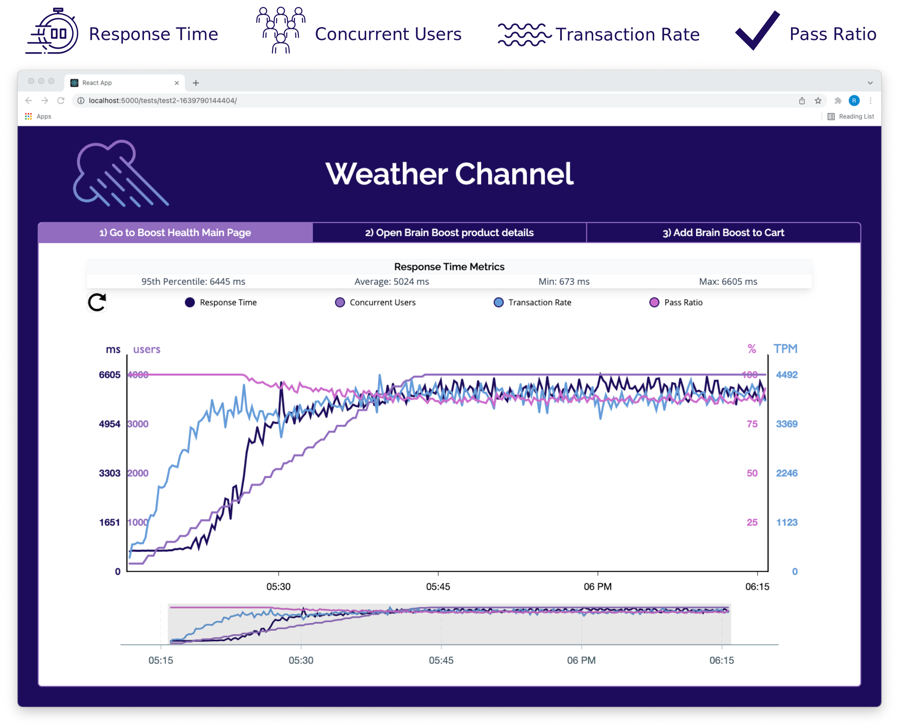
Fig. 2.10: Weather Channel gives you insight into the performance of your app
Specifically, Weather Channel allows you to track:
Response time
Concurrent users
Transaction rate (end user actions performed per minute)
Pass ratio
3 Who should use Monsoon?
Let's take a look at Boost's other browser-based load testing options.
Fig. 3.1: Browser-based load testing options
There are two typical paths Boost might choose. The first is a cloud-based software as a service solution, like the Flood platform mentioned earlier. The second is a do-it-yourself approach, tasking the Boost engineers with building their own browser-based load testing tool.
Let's examine the tradeoffs for a cloud-based SaaS solution first. A platform like Flood is highly scalable, able to simulate tens or even hundreds of thousands of concurrent users. It's also generally very easy to use. It's usually a hosted platform, meaning the end user doesn't need to configure or deploy any infrastructure. This makes the overall process quite straightforward. However the downside is cost. A single test can cost thousands of dollars. And a small-to-medium sized company like Boost may have a difficult time justifying spending that much on yet another SaaS product.
Turning to a DIY approach, a major benefit here is that, once the platform is built, operation is much cheaper. You'll only pay for the underlying cloud infrastructure, no ongoing platform fees. However, building a distributed load testing platform requires a lot of engineering hours. Those engineering hours are expensive and would be hard to justify for a company of Boost's size. Furthermore, Boost doesn't have a huge engineering team. To build a distributed load testing tool from scratch, they'll have to pull engineers off projects that are central to their core business.
Neither of these options seems like a good fit for Boost. But what if there were another option? That’s where we think Monsoon fits in.
Fig. 3.2: Monsoon's niche in the browser-based load testing space
Monsoon glues together all the resources needed to create a near real time load testing platform, then deploys it directly to Boost's AWS account.
Thanks to its serverless nature, Monsoon is just as easy to use as existing cloud-based SaaS solutions like Flood. Additionally, since Monsoon would be deployed directly to the Boost AWS account, Boost retains ownership of its data.
However, Monsoon is neither as scalable nor as feature rich as other cloud-based SaaS products or highly-customized DIY solutions. Monsoon is an open source solution intentionally optimized for small- to medium-sized companies that want to load test their SPA for up to 20,000 concurrent users.
The good news is that the Monsoon team has already invested the engineering hours so you don't have to. We also charge no platform fees. You only pay the AWS charges stemming from the infrastructure spun up to run your test. This makes Monsoon significantly more affordable than either cloud-based SaaS solutions or DIY approaches.
4 Design Decisions
Early on, we made two design decisions that strongly shaped the Monsoon framework. The first was choosing to focus on high scalability. The second was striving to provide near real time results to engineers using Monsoon.
4.1 Scalability
We set out to build a framework able to simulate as many users as possible, for as long as possible, as cheaply as possible. To accomplish this, we focused on the scalability of the load generation engine and of the data pipeline.
Optimizing the Load Generation Engine
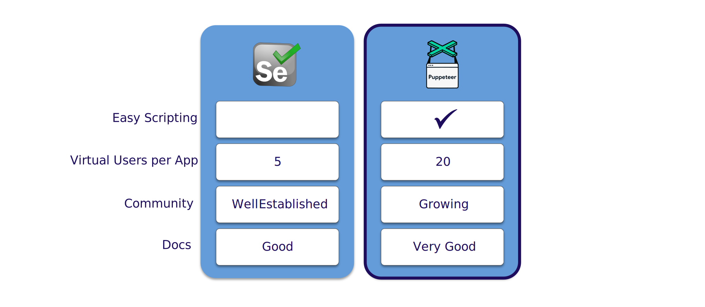
Fig. 4.1: How Puppeteer stacks up against Selenium
We had several options for simulating virtual users via headless browser instances. Selenium is the industry default. One Selenium app instance is able to simulate 5 virtual users. We compared this to Google's Puppeteer discussed earlier. One Puppeteer app instance is able to simulate 20 virtual users.
This difference in simulated users per app instance is hugely important. Since each app instance requires its own execution environment, increasing the number of simulated users per app instance reduces the compute resources you need. And since AWS's billing model is "only pay for what you use", using compute resources more efficiently directly leads to cost savings.
By choosing Puppeteer over Selenium to generate load, we were able to test 4 times as many users for the same price.
Optimizing the Data Pipeline
Because simulating virtual users and extracting session metrics generates so much data, Monsoon naturally uses a pipeline to move data from one point to another in our system. Two common data pipeline patterns are ELT and ETL. The ‘E’ stands for Extract, the ‘L’ stands for Load and ‘T’ stands for Transform.
The choice of one pattern over the other has significant impact on scalability.
An ELT Pipeline
Fig. 4.2: An ELT data pipeline’s tradeoffs
ELT is the current industry standard. With ELT, we load all the raw data into storage before making any changes to that data. Benefits to this approach include simplicity and flexibility. Because all the data is stored together, all transformations can be done in one place. And since you hang on to all the raw data, you're free to run further analyses and change the data's final form at any point in the future.
But ELT has drawbacks as well. You need to transmit all data from the extraction point into storage. This can result in substantial bandwidth costs and transmission times. Furthermore, once the data is loaded into storage, you'll need to pay ongoing storage fees.
An ETL Pipeline
Fig. 4.3: An ETL data pipeline’s tradeoffs
ETL is also an industry standard. With ETL, we transform the data between the extraction and storage points, so that we're only storing data that's already been transformed. Benefits to this approach include reduced transmission times and costs. You reduce the volume of data right after the extraction step, thus reducing the time and bandwidth costs associated with moving that data into storage. And since you're not storing your entire raw data set, storage costs are naturally reduced.
But there are cons to ETL. The first is transformation complexity. Your data may require transformations at multiple steps along the data pipeline. This can become technically complex. The ETL pattern also lacks flexibility. Since we're only storing transformed data, we effectively lock ourselves into a final form of the data before starting the pipeline.
Another concern with ETL is data integrity. If something goes wrong in the pipeline, causing you to lose all or part of the transformed data, you don't have raw data to fall back on. The data would need to be regenerated, which may or may not be possible.
Fig. 4.4: Monsoon is an ETL pipeline
Ultimately we found the ETL pattern a better fit for our use case. We were willing to deal with the transformation complexity, and final data shape lock-in actually wasn't a problem for us. Every load test Monsoon runs shows the same metrics, so the final shape of the data never changes.
Fig. 4.5: ETL is a better fit for Monsoon
Let's quantify this difference by looking at database writes. Say we run two different load tests with the test script, virtual user count and duration held constant. If Monsoon's data pipeline were to follow the ELT pattern, the number of writes required increases by a factor of about 800. And to generate the same final graph in the local Weather Channel dashboard, 2 megabytes of information in an ETL pipeline would need to be 24 gigabytes of information in an ELT pipeline.
As we mentioned earlier, AWS uses a billing model of “only pay for what you use”. Therefore if we use less storage and transmit less data, it costs less. So holding the infrastructure budget constant, a user is able to run load tests that are many orders of magnitude larger since we designed Monsoon with an ETL data pipeline.
4.2 Near Real Time
Now let's turn to the design decisions we made so that Monsoon can display results in near real time.
First let's clarify some terminology. Real time data is data that's collected, processed and analyzed on a continual basis. The resulting information should be available to the end user immediately after being generated.
And near real time is just real time, but with a delay introduced beforehand. Teams view a situation as it existed in the recent past rather than as it is right now. (Note that there isn't a precise cut off for what is or isn't considered near real time.)
Why Near Real Time?
Load tests can be really long. It's not uncommon to run a test for hours, days or even weeks. Because of this, Monsoon can handle tests of arbitrary length – the limiting factor is only the user's AWS budget.
But we don't want our users to have to wait until a test completes before they see results – we'd like them to see results as soon as possible.
This means that Monsoon needs to extract, transform and load data into the database on a regular basis so it can be queried and displayed on the locally-hosted dashboard.
Near Real Time Pros and Cons
But building Monsoon as a near real time framework has pros and cons.
Fig. 4.6: Monsoon’s near real time dashboard prevents this
On the pro side, engineers can monitor their tests in near real time, spotting issues as they come up rather than waiting until the entire test completes. Additionally, if the load test is important enough, it can become something of an event at the company running it. While researching our project, we actually came across stories of large teams reserving conference rooms, ordering food and watching the load test results roll in live.
But a major drawback to implementing a near real time data pipeline is the complexity. There are a lot of components, and it's technically challenging to coordinate all of them so as to avoid losing or double counting data points. We'll return to this complexity later.
Now let's move on to examine Monsoon's architecture in greater detail.
5 Monsoon's Architecture
5 Using Tapestry
5.1 Prerequisites & Installing Tapestry
Getting started with Tapestry is pretty simple. You will need the following:
Node and NPM
An AWS account and AWS CLI
Docker
If you were the developer, you would first need Node and NPM installed since Tapestry is a Node package. Since
Tapestry provisions several AWS resources, you are required to have an AWS account and the AWS Command Line
Interface configured on your machine. Finally, you will need to have a Docker account and have it installed on
your machine.
After these preliminary steps, all you would need to do to get started is run npm i -g tapestry-pipeline, and a host of commands will be provided to you.
5.2 Tapestry Commands
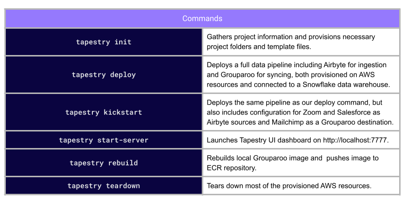
Tapestry's list of commands.
As a new user, the first Tapestry command you would run is tapestry init.
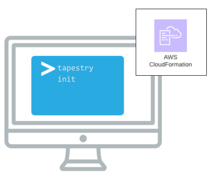
Tapestry provides a CloudFormation template during the init command.
With tapestry init, you give your project a name, and Tapestry will provision a
project folder along with an AWS CloudFormation template. This template allows you to provision and configure
AWS resources with code. In particular, this template is used to provision resources for the data ingestion
phase of the pipeline. What Tapestry provides for the syncing phase of your pipeline is dependent upon which
command you run next.
Running tapestry init from the command line.
5.3 Deploy vs. Kickstart Commands
Next, you have a choice between the tapestry deploy or tapestry kickstart commands. Once you make your selection, Tapestry provides all the
necessary configuration files for the data syncing phase.
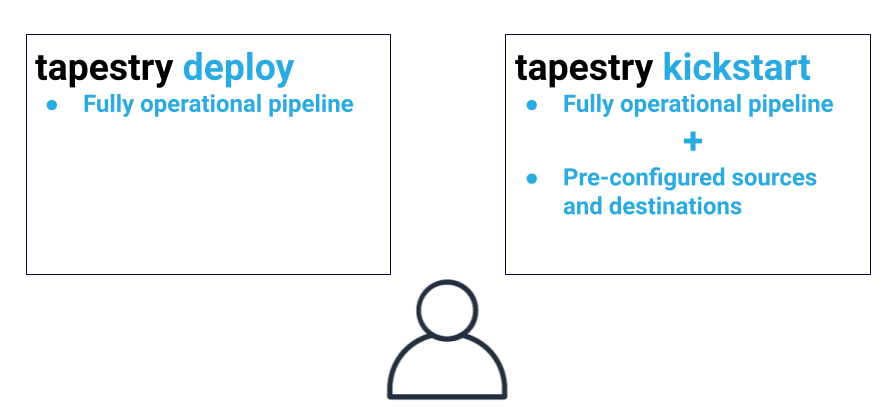
Both commands automate the deployment of a fully operational pipeline, but kickstart includes two pre-configured sources, Zoom and Salesforce, along with one
destination, Mailchimp. These pre-configured third-party tools set up your pipeline to have immediate
end-to-end data flow, beginning with data ingestion and ending with data syncing into these tools. Regardless
of which command you choose, note that a Snowflake account is required for bothdeploy and kickstart.
5.4 End-to-End Demo
To better show the full flow of data through a Tapestry pipeline, this section will walk through our tapestry kickstart command.
Prior to execution, you will have to own or create accounts with Zoom, Salesforce, and Mailchimp. kickstart then begins by prompting you with a short series of questions about the
previously mentioned accounts, as well as Snowflake, Tapestry’s data warehouse of choice. Tapestry stores this
information in the AWS SSM Parameter store. This keeps sensitive data safe, but also accessible.
Kickstart command prompts user for inputs.
After your information has been collected, kickstart continues by creating the
necessary databases and tables within your data warehouse to be utilized by both your ingestion and syncing
tools.
Let’s quickly review the infrastructure that this command is provisioning.
Data ingestion stack created during deployment.
Tapestry uses the CloudFormation template supplied during the init command to
create a CloudFormation stack, provisioning AWS resources specifically related to your ingestion tool,
Airbyte. These resources include an S3 staging bucket, an EC2 instance for Airbyte to run on, and an
Application Load Balancer to route traffic to our EC2 instance. Airbyte is then configured to extract certain
data from your Zoom and Salesforce accounts and send it over to your warehouse.
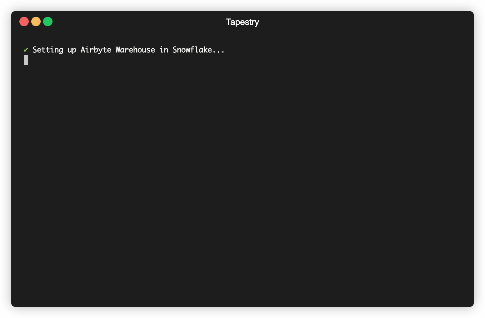
Setup and provisioning of data ingestion stack from the command line.
You will then be asked to carry out a few steps so the data is transformed in your warehouse using the data
model Tapestry provides for DBT. The raw data will be aggregated from both sources into one transformed table,
filtered for duplicates, and appropriately formatted to be synced to Mailchimp.
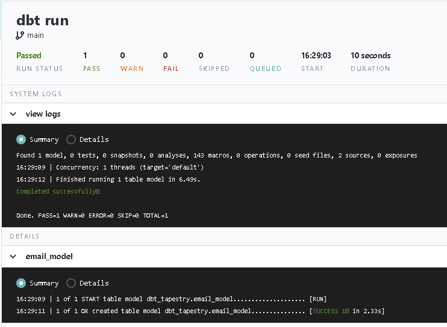
A successful DBT run, transforming data in the warehouse.
To complete the pipeline, kickstart creates another CloudFormation stack, this
time spinning up various AWS resources for your syncing tool, Grouparoo.
Data syncing stack created during deployment.
These resources include an Elastic Container Services cluster to run your Grouparoo application, an Elastic
Container Registry repository with your Grouparoo Docker image stored, and another Application Load Balancer
to route network traffic to your cluster.
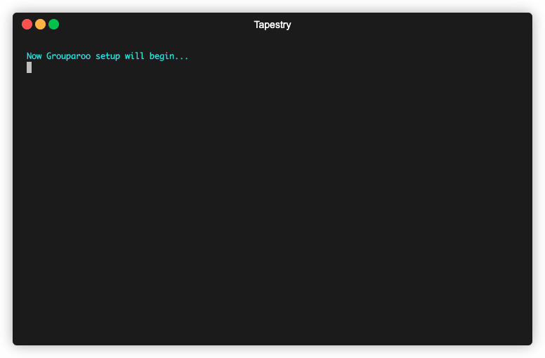
Setup and provisioning of data syncing stack from the command line.
5.5 Tapestry Dashboard
If you are deploying a new pipeline, Tapestry automatically launches your very own local Tapestry Dashboard.
Additionally, anytime you'd like to view the dashboard, you can run the command tapestry start-server to spin up and launch the UI at http://localhost:7777.
The dashboard contains documentation for how to use Tapestry, along with various pages for each section of
your pipeline. Each page displays metrics that give you better insight into the health of each component. They
also include links to the UIs for all your date pipeline tools: Airbyte, Snowflake, DBT, and Grouparoo.
Some important metrics we track on the dashboard include:
Number of data ingestion sources currently operational
Number of data syncing destinations currently operational
EC2 instance status
ECS cluster status
CPU utilization
List of source tables in the data warehouse
List of transformed tables created in the data warehouse
Logs for each tool for increased observability
5.6 Tapestry Data Flow
Now let’s actually see data flow through the entire pipeline with an example using the tapestry kickstart command.
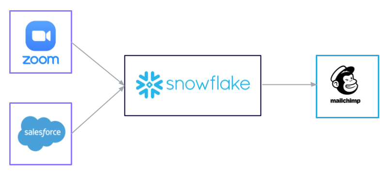
Flow of data with kickstart command.
Our goal in this example is to extract data from both Zoom and Salesforce and push it to our data warehouse,
Snowflake. From there, we want to combine a list of webinar registrants from Zoom and Salesforce contacts into
one single table, and filter out any duplicates along the way. Finally, we want to send this complete set of
data over to Mailchimp.
Zoom Data
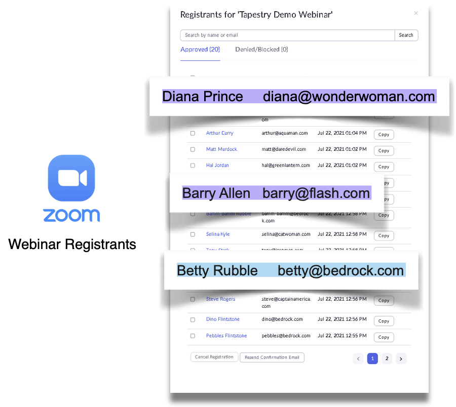
Source data from Zoom.
As you can see from this table, we have several different people who have registered for a Zoom webinar. Of
particular note are Diana Prince, Barry Allen, and Betty Rubble. As indicated in blue, Betty Rubble is a
unique contact only found in Zoom, while the purple around Diana and Barry indicates that they are contacts
found in both Zoom and Salesforce. Our goal is to get all three of these entries over to Mailchimp, with only
one entry each for Diana and Barry.
Salesforce Data
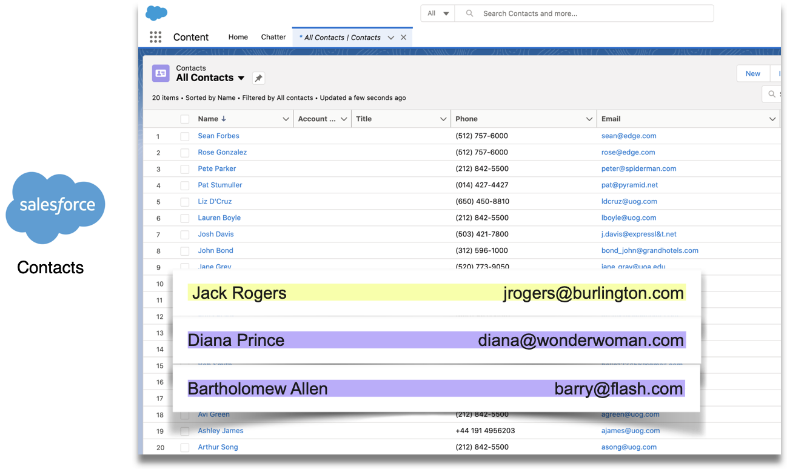
Source data from Salesforce.
Now in Salesforce, we have a different list of customers. In yellow, there is a contact who is unique to
Salesforce, Jack Rogers, while Diana and Bartholomew, a.k.a. "Barry" are in purple again, as seen in the Zoom
list.
Even though Barry is going by a different first name in Salesforce, his email is the same across both sources,
allowing us to uniquely identify him. This means that when we combine the two lists, we can use the email
address field as a unique key to eliminate record duplication.
Snowflake Warehouse
Source data and transformed data in the warehouse.
Once the data from both Zoom and Salesforce have made it into our Snowflake warehouse, we can transform the
data by combining both lists, and removing duplicate entries. You can see the two tables highlighted in
purple. The TAPESTRY_WEBINAR_REGISTRANTS table has all of our Zoom data, and the TAPESTRY_CONTACT table has
all of our Salesforce data. The EMAIL_MODEL table that is highlighted in blue is the newly transformed table
that we will sync to our Mailchimp account.
Mailchimp
Synced data in Mailchimp destination.
Finally, here in Mailchimp, we see that we’ve successfully synced all of our Zoom webinar registrants and
Salesforce contacts, and made sure that there is only one entry for Barry and Diana. You can also see that our
unique users, Betty and Jack made it over as well.
5.7 Maintenance & Management
Rebuild Command
Tapestry also supplies users with a tapestry rebuild command that is specific to
the syncing side of the pipeline. While most updates to Airbyte can be done right in their UI, Grouparoo’s
dashboard is mainly for application visibility and observability. In order to add, remove, or update any
sources or destinations, changes need to be made to the configuration files in your local Grouparoo directory.
Once these changes are finalized locally, the image must be rebuilt, pushed to a private repository in the
Elastic Container Registry, and the Grouparoo CloudFormation stack must be updated. All of these steps are
what Tapestry’s rebuild command automates. The user simply makes the changes
themselves to the configuration files and then runs tapestry rebuild. Tapestry
handles the rest.
Updated Docker image is pushed to ECR.
Teardown Command
If the user, for whatever reason, decides they are no longer in need of Tapestry’s data pipeline, Tapestry
provides tapestry teardown to terminate and remove most of the AWS resources
provisioned during deployment, as well as the Airbyte and Grouparoo applications that ran on those resources.
We say “most” AWS resources because we do not destroy your S3 bucket, nor do we destory any parameters in your
AWS SSM Parameter Store. Tapestry uses the Parameter Store to store user inputs, such as API keys and various
account credentials. These resources remain intact so that you can retain access to this data even after your
pipeline has been torn down.
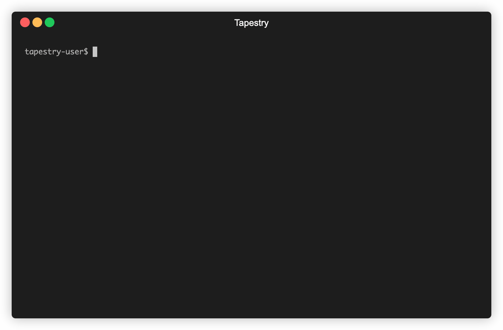
Running tapestry teardown from the command line.
6 Implementation Challenges
6.1 Ingestion Phase Challenges
Scaling the EC2 Instance
While prototyping the ingestion part of the pipeline, we encountered an interesting challenge. Initially, all
of the Zoom data was being extracted and loaded into the data warehouse without any issues, but the Salesforce
API call made by Airbyte was consistently timing out. This eventually led to a 504 server error.
504 bad gateway error on Airbyte.
In AWS, we saw that the Airbyte EC2 Instance was becoming an unhealthy target for the Application Load
Balancer every time we attempted to extract data from Salesforce through Airbyte.
Unhealthy target for ALB on AWS console.
After further investigation, we found that the EC2 instance had alarmingly high CPU usage. Our solution was to
vertically scale this EC2 instance to increase its computing power. As we discussed
in our architecture section, we were limited to deploying Airbye on a single EC2 instance, making it
virtually impossible to horizontally scale. Once we increased the size of the server, our error message
disappeared.
Spike in CPU utlization on AWS monitoring dashboard.
This led to our decision to include a "CPU Utilization" section in Tapestry’s dashboard to monitor
the AWS resources.
Caching an API Response
While we were implementing the automation of connecting Salesforce to the data warehouse, we were getting inconsistent
responses from API calls. When deploying each user's pipeline using the kickstart command,
Tapestry attempts to set up a connection between Salesforce and the user's warehouse through Airbyte. Ideally, the process is as follows:
Ideal setup via Airbyte API and data transfer.
Tapestry makes an API call to Airbyte to retrieve the appropriate schema for Salesforce contacts.
Airbyte makes an API call to Salesforce to get the contacts schema and send that schema back to Tapestry.
Tapestry makes another API call to Airbyte to set up a connection between Salesforce and the data warehouse (Snowflake).
The above process occurs once during deployment. If completed successfully, Airbyte makes API calls to Salesforce on the user's
behalf to ingest data on a schedule.
However, Airbyte did not always receive a successful response from Salesforce when requesting the schema.
This, in turn, broke the rest of the process, and Tapestry was not able to establish the connection needed to begin
transferring data.
Error requesting Salesforce schema and subsequently cannot make API calls that follow.
Upon further research, we found that Salesforce had an unreliable API endpoint, and that this was a common problem encountered by
developers using Salesforce.
We couldn’t accept such an inconsistent response rate, so we considered two options:
Implementing API retry logic
Caching
Airbyte already has built-in retry logic that attempts the API call three times. In addition, we made multiple
requests manually.
This resulted in us hitting Salesforce’s rate limit and being throttled for a 24-hour period.
At that point, we could have tried exponentially backing off, but doing so would have made the user
experience unacceptable.
It would be an inconsistent experience, and would also potentially take hours before being able to ingest data.
So we turned to our next option, caching. We decided to store the Salesforce contact schema that we received from the next
successful response in a file exporting a "contactSchema" object.
Logic using cached schema.
As the above image shows, we can now reference the "contactSchema" object for future API calls. This improved the process dramatically.
Tapestry caching solution for obtaining Salesforce schema.
With the schema cached, we now only make one API call to establish the connection.
New request/response cycle during deployment with caching.
While this simplifies the overall deployment process, it's worth noting that this is not a permanent solution and comes with some drawbacks.
If Salesforce ever makes a change to their schema, then our caching solution will break down. We would then need to capture the new
schema and replace the
old file with the new one. To us, though, this solution was worth the tradeoff of additional maintenance, and
so far Salesforce has
not made any changes to their schema.
6.2 Storage Phase Challenge
Automating Warehouse Setup
One interesting challenge we encountered when working with Snowflake was how to run SQL statements for a new
user once they input their credentials. We needed to run a sequence of 34 commands to set up the
warehouse with the necessary databases, schema, roles, and permissions for the Tapestry pipeline to operate.
Example SQL statements required for warehouse setup.
Node.js SDK for Snowflake
We found that Snowflake provides a Node.js SDK, which would allow us to communicate with the Snowflake
warehouse. Since the SDK only allows one SQL statement to be executed at a time, we needed to store each
statement as an array element, and then iterate through each one individually.
Now that we could execute each SQL statement individually, we ran into another problem because the SDK is
callback-based and runs code asynchronously.
To visualize this problem, we added a log statement with the array index, and you can see how the statements
are being executed out of order. The error logs indicated that Snowflake was attempting to create databases
and
tables before the permission and role statements had finished executing.
SQL statements executed out of order.
One option for solving this might be to nest each callback so that the statements are executed in the right
order. However, this would result in unreadable code that would be hard to manage.
Snowflake Promise Library
Instead, we opted to use the snowflake-promise library. This is a wrapper for the Snowflake SDK that provides
a promised-based API.
This made it possible to use async/await to handle multiple promises in a synchronous fashion, and the logs
indicate that the statements are being executed in the right order.
SQL statements executed in the correct order.
6.3 Syncing Phase Challenge
Injecting Secrets at Runtime
One particularly interesting challenge when deploying Grouparoo was determining how to inject sensitive user
inputs, like API keys or passwords, into the Docker container for Grouparoo’s web application. For Grouparoo,
we needed to reference these inputs in configuration files as environmental variables.
Challenge of injecting sensitive user inputs into the Docker container.
We soon learned that you can pass environmental variables to a container by referencing a local .env file
within a
Docker Compose YAML file. This solved part of the problem. The Docker container could now access any variables
we provided in this file. However, since we do not receive user inputs until runtime, this .env file
had to be dynamically generated during execution, but before running the container on ECS.
Using a .env file referenced by the Docker Compose YAML file to inject secrets at runtime.
Our solution for doing this was two-fold. First, we stored the user inputs in the SSM Parameter Store on AWS.
This ensured that this sensitive information was secure and encrypted, but also available for us to access
from the AWS CLI as needed. Then, we created a function to dynamically write the .env file in the user’s
project folder after we had all of their inputs.
Storing secrets at runtime and dynamically generating a local .env file.
7 Future Work
There are still a few features we would like to add to Tapestry in the future.
Enable cross-platform support, such as deployment on Google Cloud Platform.
Deploy Airbyte with ECS, so that our user has greater flexibility in terms of scaling.
Airbyte has indicated that this compatibility will be available sometime in the future.
Create more built-in templates to the kickstart command, so that Tapestry can
be used out-of-the-box for more use cases.
Incorporate more advanced metrics for pipeline monitoring, such as Cloudwatch alarms that
can send notifications when particular utilization thresholds are reached.